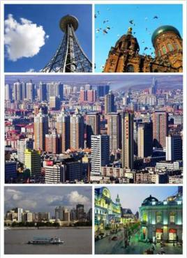
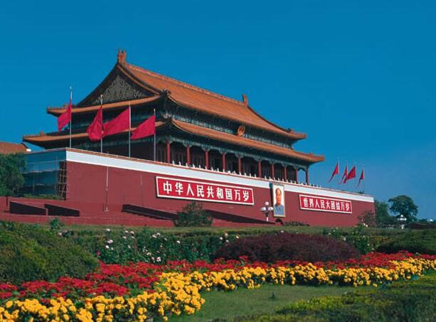
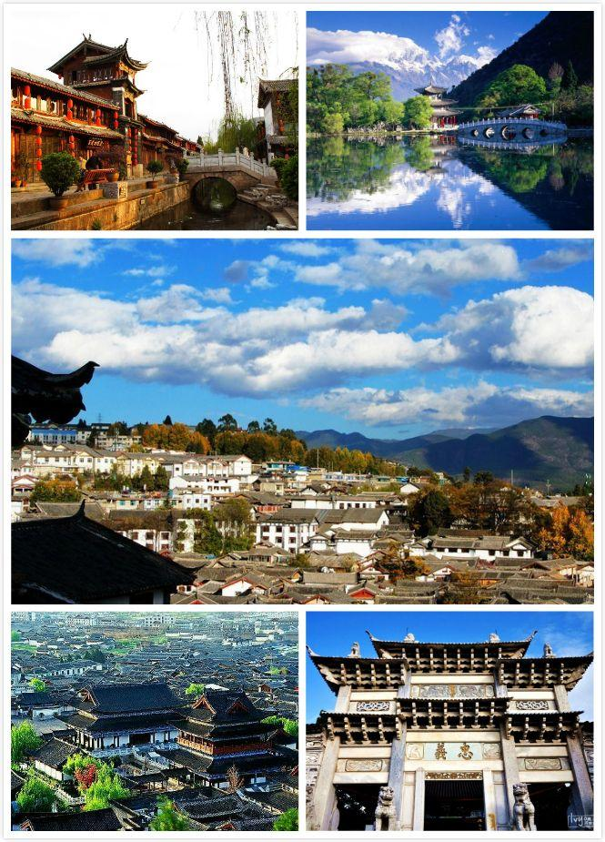
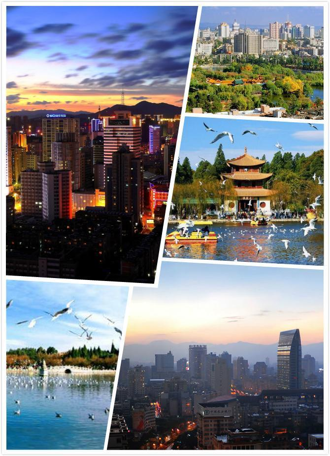
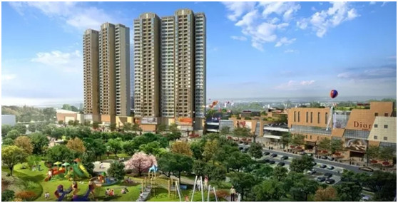

哈尔滨简介:
 哈尔滨， 黑龙江省省会、 副省级市。位于中国东北平原东北部地区、黑龙江省南部，界于东经125°42′～130°10′、北纬44°04′～46°40′之间，东与牡丹江市、七台河市接壤，北与伊春市、佳木斯市接壤，西与绥化市接壤，南与吉林省长春市、吉林市、延边朝鲜族自治州接壤；属中温带大陆性季风气候。辖区总面积5.31万平方公里，辖9个市辖区、7个县、代管2个县级市；户籍人口962.1万（2016年末）[1]。 哈尔滨的历史源远流长，是一座从来没有过城墙的城市。元、明时，成为成吉思汗三弟斡斤家族的领地和奴尔干都司的辖地。明末清初时期，女真人曾用此城遗存的建筑材料在原地修筑阿勒楚喀要塞。1946年，建立人民政权，成为全国解放最早的大城市。建国后，是国家重点建设城市之一。[2] 2018年12月21日，哈尔滨被国家发改委、交通运输部列入“陆港型国家物流枢纽承载城市”、“空港型国家物流枢纽承载城市”、“生产服务型国家物流枢纽承载城市”、“商贸服务型国家物流枢纽承载城市”。北京简介:
 北京，简称“京”，是中华人民共和国的首都、直辖市、国家中心城市、超大城市、国际大都市，全国政治中心、文化中心、国际交往中心、科技创新中心，是中国共产党中央委员会、中华人民共和国中央人民政府、全国人民代表大会、中国人民政治协商会议全国委员会、中华人民共和国中央军事委员会所在地，也是中部战区司令部驻地。 北京位于华北平原北部，背靠燕山，毗邻天津市和河北省。北京的气候为典型的北温带半湿润大陆性季风气候。 北京是首批国家历史文化名城和世界上拥有世界文化遗产数最多的城市。早在七十万年前，北京周口店地区就出现原始人群部落“北京人”。公元前1045年，北京成为蓟、燕等诸侯国的都城。公元938年以来，北京先后成为辽陪都、金中都、元大都、明、清国都。1949年10月1日成为中华人民共和国首都。 2018年12月21日，北京被国家发改委、交通运输部列入 “空港型国家物流枢纽承载城市”。丽江简介:
 丽江市，云南省辖地级市；位于云南省西北部，云贵高原与青藏高原的连接部位，市区中心位于东经100°25'北纬26°86'，北连迪庆藏族自治州，南接大理白族自治州，西邻怒江傈僳族自治州，东与四川凉山彝族自治州和攀枝花市接壤；属高原型西南季风气候。辖区总面积2.06万平方公里，辖1区4县，常住人口128.5万（2016年末）[1]。 “丽江”一名，始于元朝。战国时，属秦国蜀郡。战国末期，为滇国境域。两汉时，滇国降汉，今丽江市属越住嶲郡，称遂久县。1980年，设立丽江地区行政公署。2002年，丽江撤地设市， 丽江自古以来是丝绸之路和茶马古道的中转站，丽江有建于南宋的丽江古城，纳西族名称叫“ 巩本知”。著名景点有：丽江古城、 玉龙雪山、 白沙壁画、 虎跳峡、 老君山、 束河古镇等。 2018年10月10日，丽江市入选“2018年中国康养城市排行榜50强”第12名。昆明简介:
 昆明隶属云南省，享“ 春城”之美誉，地处云贵高原中部，北与凉山彝族自治州相连，西南与玉溪市、东南与红河哈尼族彝族自治州毗邻，西与楚雄彝族自治州接壤，东与曲靖市交界， 昆明是云南省的省会，是中国面向东南亚、南亚开放的门户城市， 是国家历史文化名城，是我国重要的旅游、商贸城市，也是西部地区重要的中心城市之一。 1928年8月1日，昆明市政公所改组，正式成立昆明市政府。抗日战争期间，由于人口剧增，昆明战略地位更显得重要，云南省政府又于1939年11月正式批准昆明市为云南省政府直辖市。[1] 昆明属北亚热带低纬高原山地季风气候，总面积21473平方公里，总人口678.3万人（2017年常住人口）[2]，下辖7个市辖区、1个县级市、3个县、3个自治县，荣获“中国昆明出口商品交易会”、“中国国际旅游交易会”、“中国昆明国际旅游节”等称号。 2018年12月21日，昆明被国家发改委、交通运输部列入“陆港型国家物流枢纽承载城市”、 “空港型国家物流枢纽承载城市”、 “商贸服务型国家物流枢纽承载城市”。保山简介:
 保山，云南省辖地级市；位于云南省西南部，东经98°25′～100°02′和北纬24°08′～25°51′；外与缅甸山水相连，内与大理、临沧、怒江、德宏四州市毗邻。全市国土面积19,637平方公里[1]；辖2个县级区、1个县级市、3个县，户籍总人口262.6万人（2017年末）[2]。 保山是古人类发源地之一。至少在三千多年前，保山就已经存在部落国家。在汉朝势力触及保山这片领土之前，傣族先民已经在保山盆地建立部落国家“勐掌”。1950年，设保山专区。1970年，保山专区改称保山地区。2000年， 保山地区改为地级保山市。 保山属低纬山地亚热带季风气候，由于地处低纬高原，地形地貌复杂。气候类型有北热带、南亚热带、中亚热带、北亚热带、 南温带、中温带和高原气候共7个气候类型。境内有少数民族13种，是傣泰民族的发祥地、中国著名的侨乡。南方丝绸古道、滇缅公路、史迪威公路穿境而过。 2018年12月，保山市荣获第二批国家生态文明建设示范县市称号。